In this homework, I worked with geometric curves, surfaces, and triangle meshes. I implemented de Casteljau's algorithm for evaluating Bezier curves and surfaces through recursive linear interpolation. I also computed area-weighted vertex normals to enable smooth shading on triangle meshes. The main focus was mesh editing using the halfedge data structure. I implemented edge flip and edge split operations by updating halfedge pointers to change mesh topology. These operations were then used to implement Loop subdivision, which refines a mesh by splitting edges, flipping specific edges, and updating vertex positions to produce a smoother surface.
This project taught me how the halfedge structure represents mesh connectivity and how local operations can modify global mesh topology. Debugging the pointer reassignments was quite challenging, but it showed me how precise these geometric algorithms need to be, as a single incorrect pointer can break the entire mesh structure.
De Casteljau's algorithm builds a Bezier curve by repeatedly lerping between control points. Given n points and parameter t ∈ [0,1], I compute n-1 new points using (1-t) * p_i + t * p_{i+1} for each adjacent pair. Repeating this until one point remains gives the curve point at t.
My evaluateStep function does one round of lerping — it
takes a vector of points and returns the lerped intermediate points.
Calling it repeatedly produces the final curve point.
|
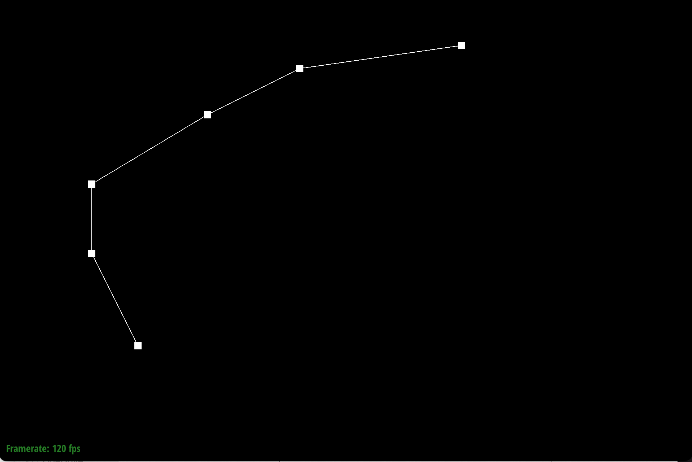 Level 0: original control points |
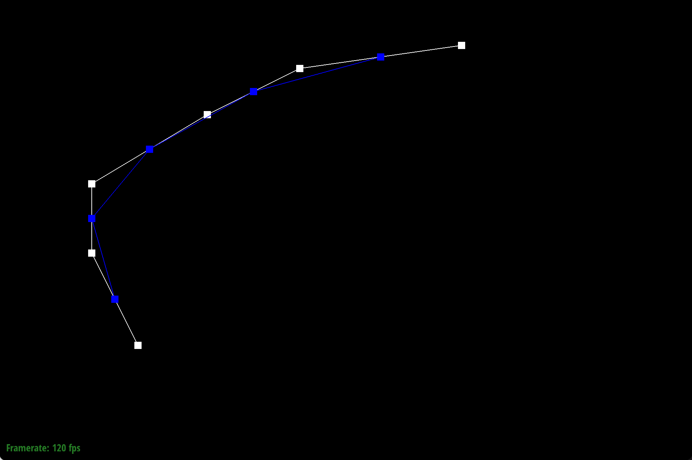 Level 1: first interpolation |
|
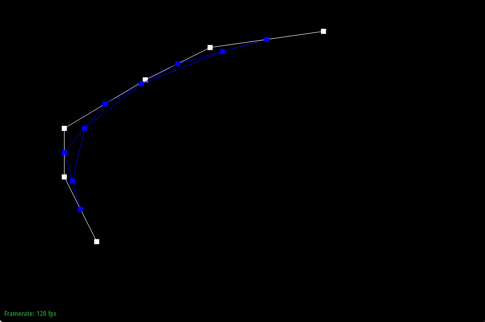 Level 2: second interpolation |
Level 3: third interpolation |
|
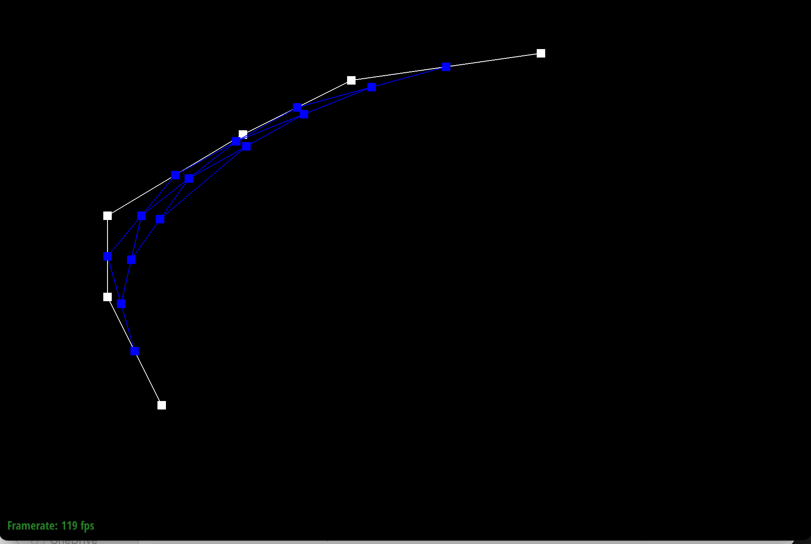 Level 4: fourth interpolation |
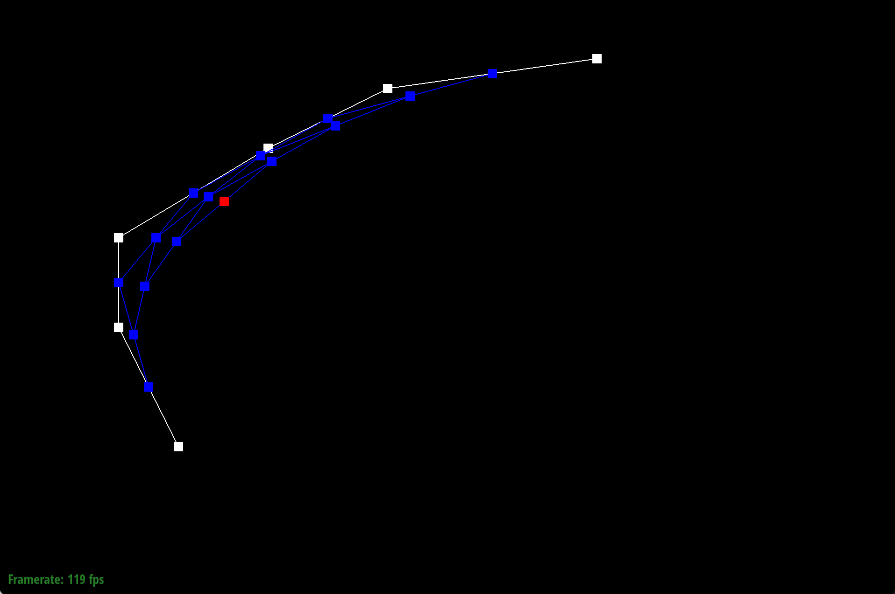 Final evaluated point on the curve |
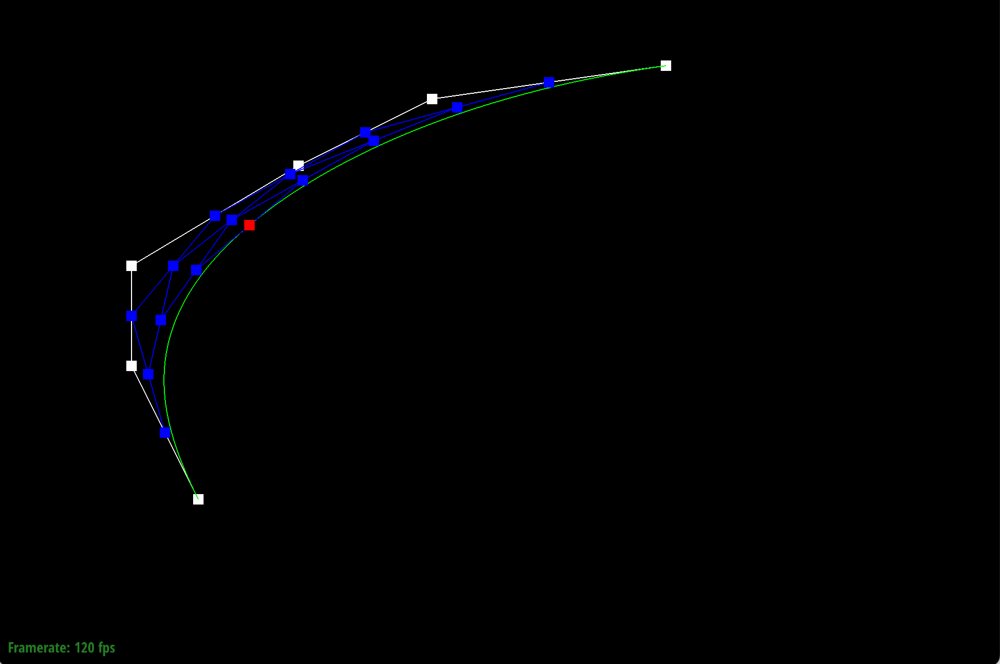
The completed Bezier curve generated from the control points
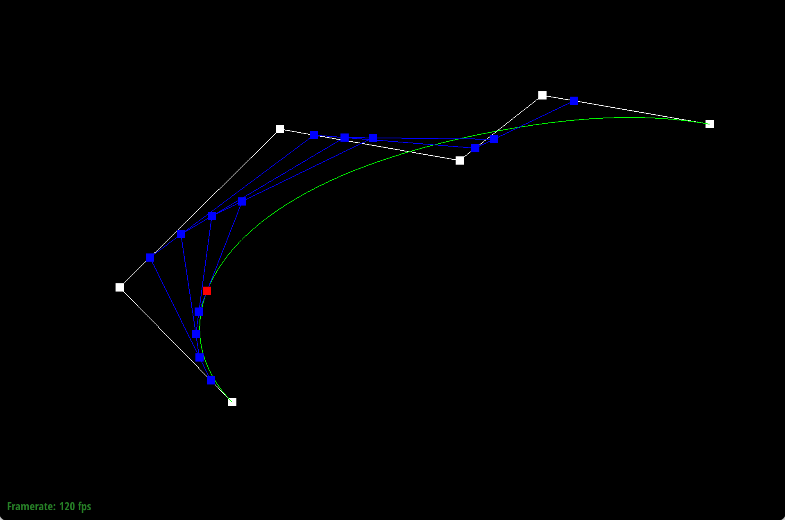
Changing control points and parameter t changes the shape of the curve
Bezier surfaces extend the 1D algorithm by applying it in two directions. Given an n×m grid of control points and parameters (u, v), I first run de Casteljau on each row at parameter u, which gives me n intermediate points (one per row). Then I run de Casteljau on these n points using parameter v to get the final surface point.
My evaluateStep does one lerp in 3D space.
evaluate1D calls evaluateStep repeatedly until one point
remains. evaluate(u, v) loops through each row of
controlPoints, calls evaluate1D with u on that row, collects the
results, then calls evaluate1D again with v on those results.
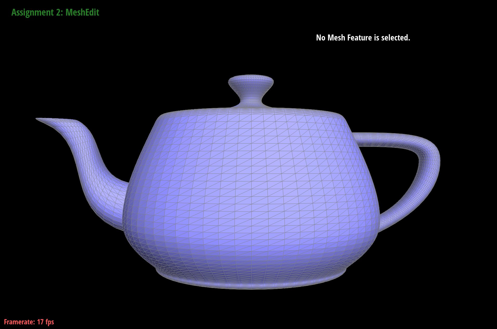
Teapot rendered from bez/teapot.bez
To compute a vertex normal, I walk around the vertex visiting all
incident faces using h = h->twin()->next(). For each
triangle with vertices (a, b, c), I compute
cross(b - a, c - a) — this gives an area-weighted normal
since the cross product magnitude is proportional to triangle area. I
then sum these vectors for all neighboring triangles and normalize the
result to produce the final vertex normal.
Default flat shading
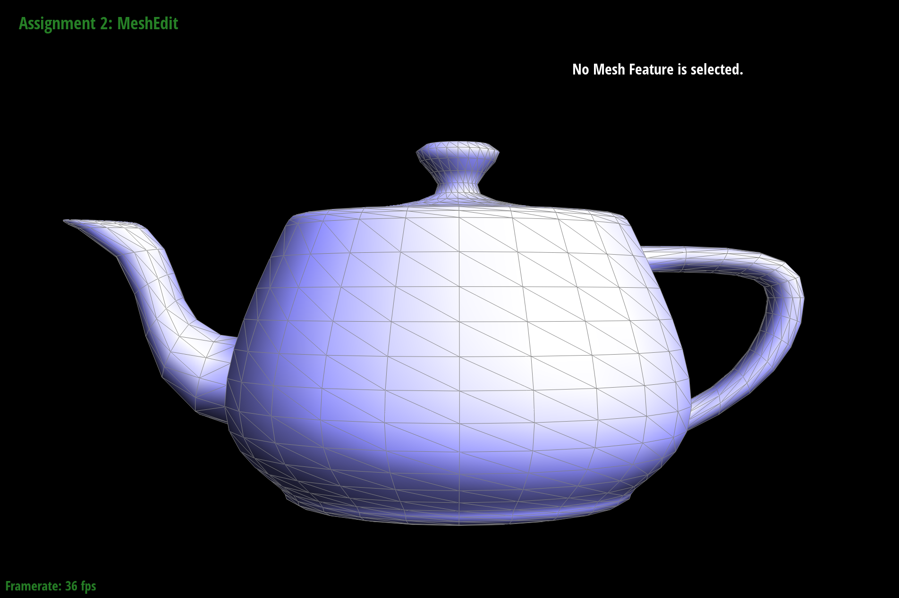
Phong shading
An edge flip swaps the diagonal of a quad. If two triangles (a, b, c) and (c, b, d) share edge (b, c), flipping it produces edge (a, d) with new triangles (a, d, c) and (a, b, d).
To implement this operation, I grabbed the six halfedges around the two
triangles, identified the four vertices and two faces, then rewired all
the pointers using setNeighbors(). I updated the halfedge
references in vertices, edges, and faces to keep everything consistent.
My debugging trick: I drew the before/after diagrams on paper, labeled all six halfedges, and wrote out the new pointer assignments before coding. Keeping the CCW orientation in mind helped me get the halfedge cycles right. I tested by flipping edges all over the mesh to make sure nothing broke.
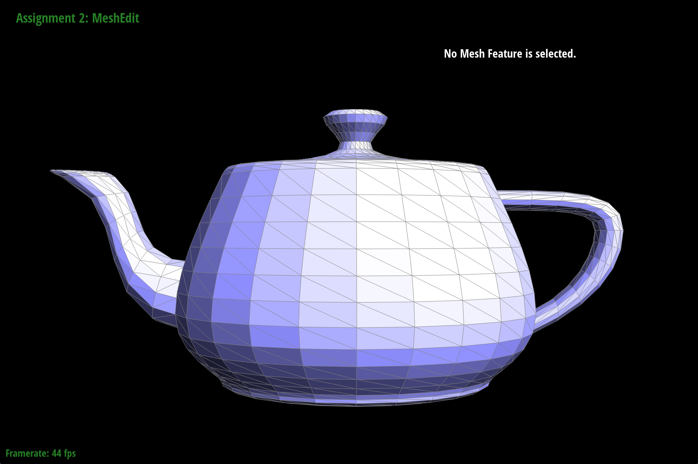
Teapot mesh before performing edge flips
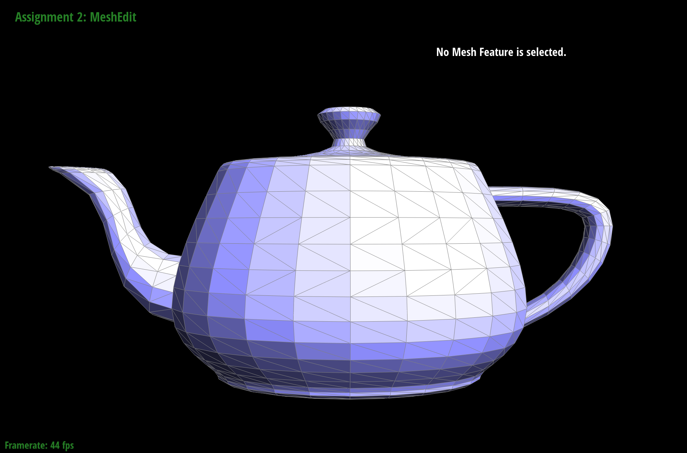
Teapot mesh after flipping several edges
Edge split takes an edge (b, c) shared by two triangles and inserts a new vertex m at its midpoint, turning the two triangles into four. The geometry is straightforward — I just needed to create the new vertex m, three new edges connecting m to the opposite vertices, and rewire everything.
To implement this operation, I grabbed the six halfedges around the two
triangles, created the new mesh elements (vertex m, three edges, two
faces, six halfedges), and carefully wired them using
setNeighbors(). I reused the original edge for one of the
split halves to avoid creating unnecessary elements. The trickiest part
was making sure m->halfedge() pointed along the original
edge direction like the spec required.
Debugging this part was honestly painful. One wrong pointer and the whole mesh falls apart. I learned to draw everything on paper first: the before state, the after state, all the halfedges labeled, and the CCW cycles written out for each triangle. This saved me so much time compared to just diving into code.
Teapot mesh before performing edge splits
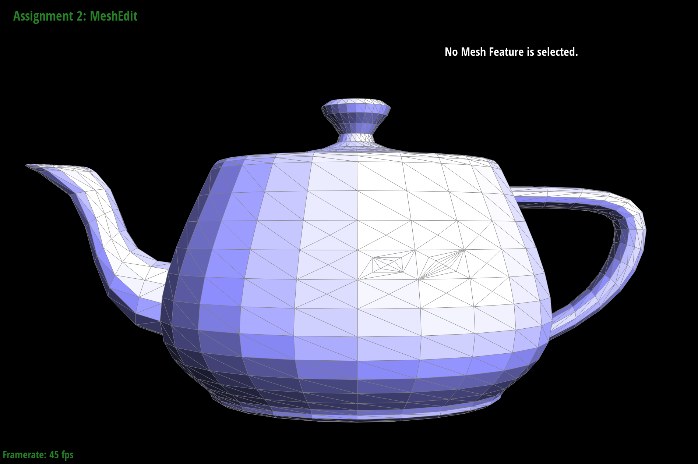
Teapot mesh after splitting several edges
Teapot mesh before applying split/flip operations
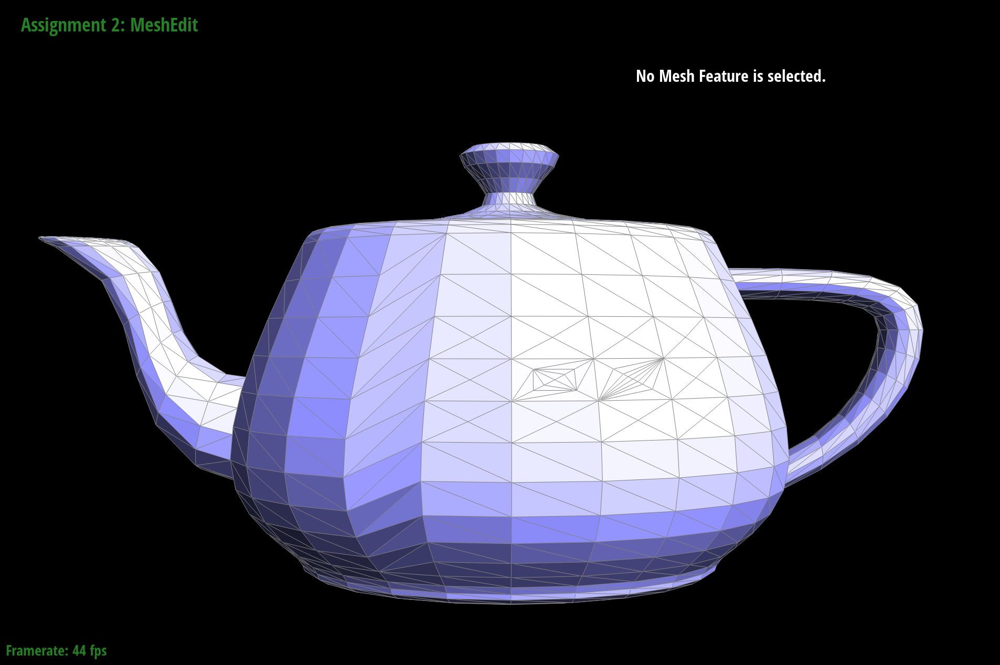
Teapot mesh after a combination of splits and flips
Loop subdivision refines a mesh by splitting edges and repositioning vertices. I implemented this operation following the recommended three-step approach in spec: First, I computed the new positions for all original vertices and edges using the Loop subdivision rules while keeping the original mesh unchanged. Second, I performed the topological subdivision by splitting edges and flipping the appropriate edges. Finally, I updated the vertex positions using the values computed earlier.
For each vertex with degree n, I computed its new position as (1 − n *
u) * v + u * (sum of neighbor positions), where u depends on n. For each
edge (A, B) with opposite vertices C and D, the new midpoint gets 3/8 *
(A + B) + 1/8 * (C + D). I stored these in
newPosition fields to avoid modifying the mesh during
computation. Then I split every original edge (collecting them in a list
first to avoid splitting new edges), flipped edges connecting old and
new vertices, and copied the new positions.
One bug I encountered was accidentally splitting newly created edges during the same iteration. This caused the algorithm to repeatedly subdivide the mesh and the program appeared to freeze. Storing the original edges in a separate list before iterating fixed this.
To observe how meshes behave after Loop subdivision, I experimented on the teapot mesh. After several subdivision iterations, the surface became much smoother, but sharper features were also noticeably rounded. In particular, the rim of the lid and the area where the lid meets the body of the teapot became overly smooth. To see if this could be improved, I pre-split a few edges around the lid rim before running subdivision. Adding these edges increased the local mesh resolution, and the result preserved the shape of the lid slightly better after subdivision. The difference is not dramatic, but the lid area looks closer to the original geometry compared to the version without pre-splitting.
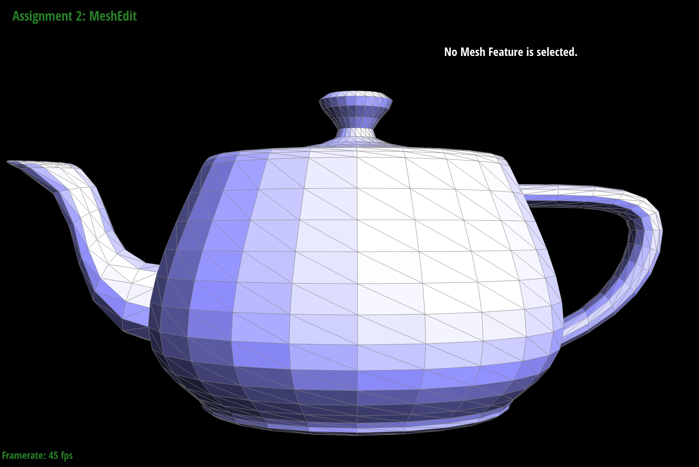
Original teapot mesh
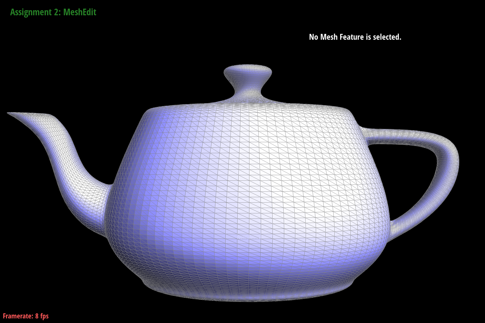
Teapot after 2 Loop subdivision iterations
Edges pre-split near the lid rim
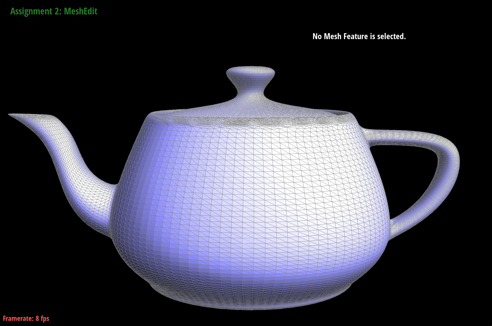
Pre-split mesh after 2 Loop subdivision iterations
For dae/cube.dae, when I subdivided the cube several times, it became asymmetric. The cube starts symmetric, but each square face is triangulated with a diagonal, creating directional bias in the connectivity. Loop subdivision then applies smoothing differently across faces, making the cube look uneven.
To reduce this effect, I pre-processed the cube by splitting the diagonal edges on the faces before applying subdivision. This balances the connectivity so subdivision rules apply more uniformly. After preprocessing, the cube stayed visually more symmetric through multiple subdivision iterations.
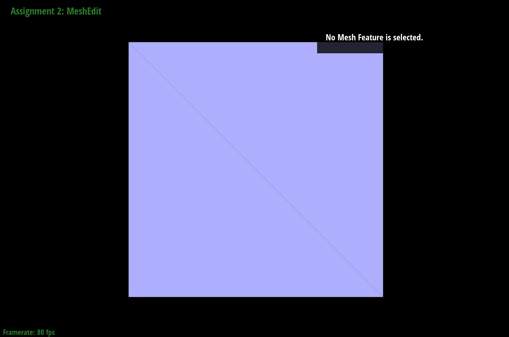
Original cube mesh
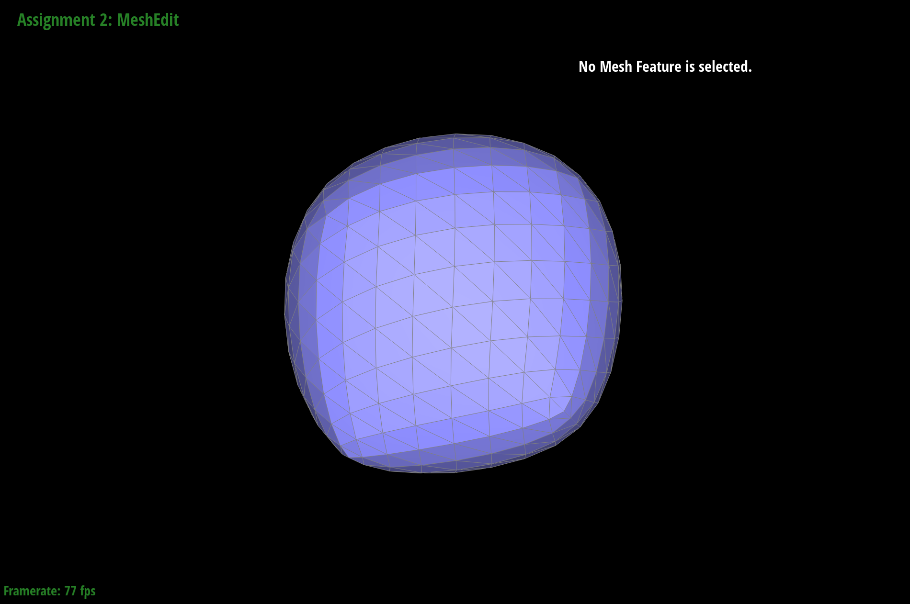
Cube after 3 Loop subdivision iterations
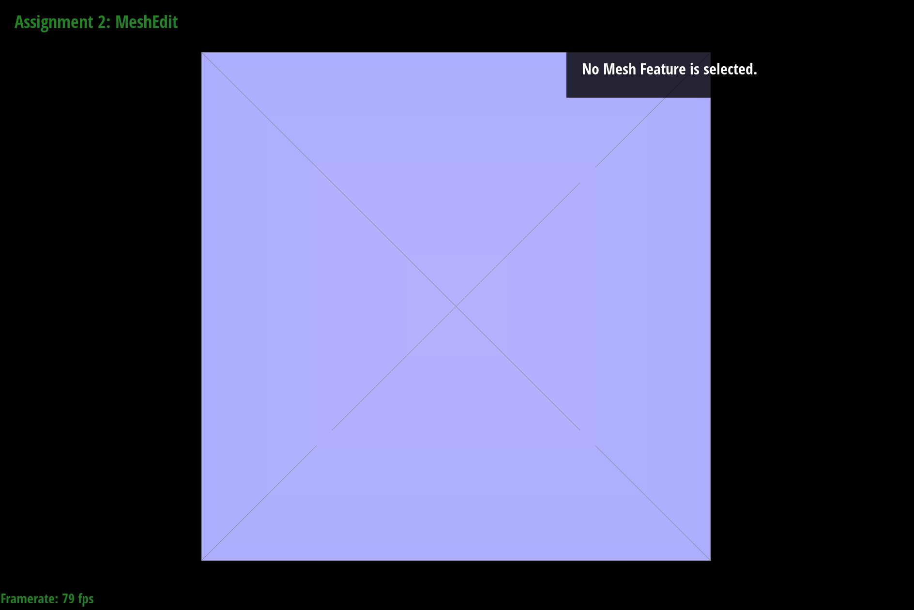
Cube after splitting the face diagonals
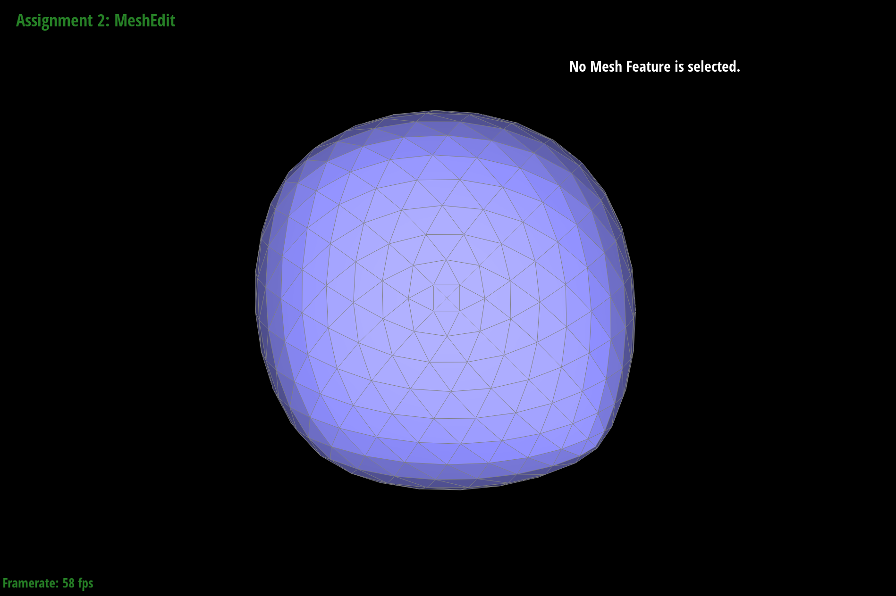
Preprocessed cube after 3 Loop subdivision iterations